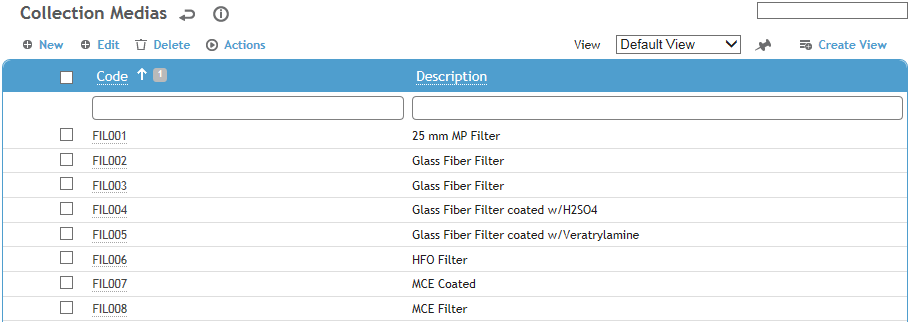
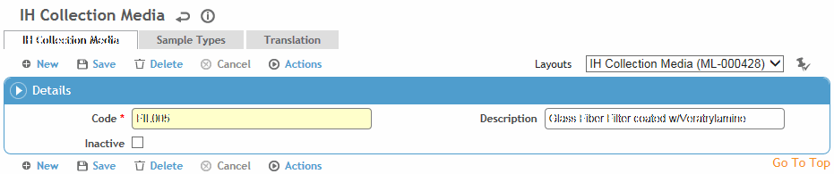

This table contains the types of collection media that can be used to conduct an Industrial Hygiene sample. Collection media can be linked to sample types; if the filter is set in the system settings (see Changing Your System Settings), when you choose a sample type, the collection media list defaults to those linked to that sample type.
To filter the list of records, enter a few characters in one or more of the fields at the top followed by an asterisk, then press Enter.

Click a link to open a record, or click New.

Enter a Code and Description for the collection media.
Click Save.
To link the collection media to a sample type, click New on the Sample Types tab. Select the sample type (from the IHSampleType table). You can link the collection media to multiple sample types.